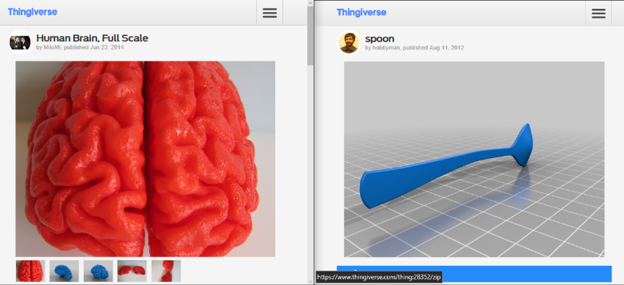

Doucments on the fourth week:
This week, the 3D scanner was being used. Then there is a method for us to convert matters into bits.
Then, it became difficult for me to think of something to make. During the class, we were scanning ourselves. It was plained to make a bust for ourselves. To be more creative, some 'horrible' idea occur to me. I can make a sculpture with only a head of me. But I am not going to stop here. In the movie of 'Raiders of the Lost Ark', the group of people met a men, who was eating the brain of the monkey. The haunting idea came up to me.
The first step is always the scanning:
And then, a little post process after the scanning:
And using the meshmixer to fix some flaws on the model:
Then, it is Rhino time!
Based on what I am going to make, I downloaded a brain and a spoon mesh model to make something "bad".
And I opened 'my skull' and put the brain in it, as well as sticking the spoon in.
However, it was too politicaly incorrect, and I will not print it out. Just leave it here.
This is not over, I am still going to make something warm hearted -------the angle
As the model was scanned, the rest of the work is to fix the point cloud, which was totally meaningless to the computer.
When fixing the statue, I make the scan solid
As I am going to make the angel raise her arm, I hav to remove the orignal arm and make a new pair for her. So, I remove the original arm with meshmixer by sculpting.
Then using Rhino, I drew the outline of the arms and made them solid. Luckily, by typing 'Bend' command, the software let me choose the object which I want to bend. And I successfully bend the arms.
And Then, the little angel is raising her arms :)
Last, it is time to let her carry something interesting! BAO ZI! And finally the BaoZi angel with 'happy birthday' on her belly is comming out of the box!